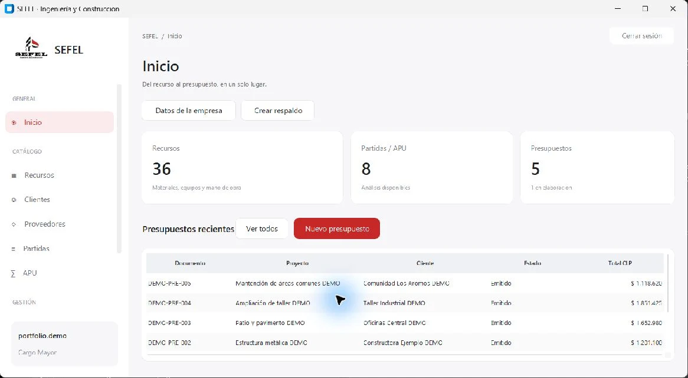
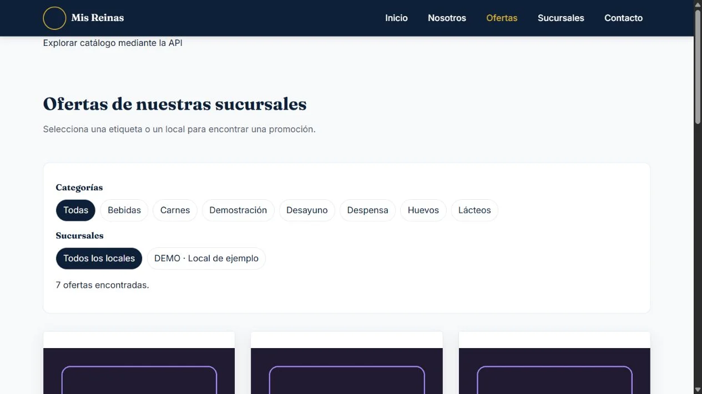
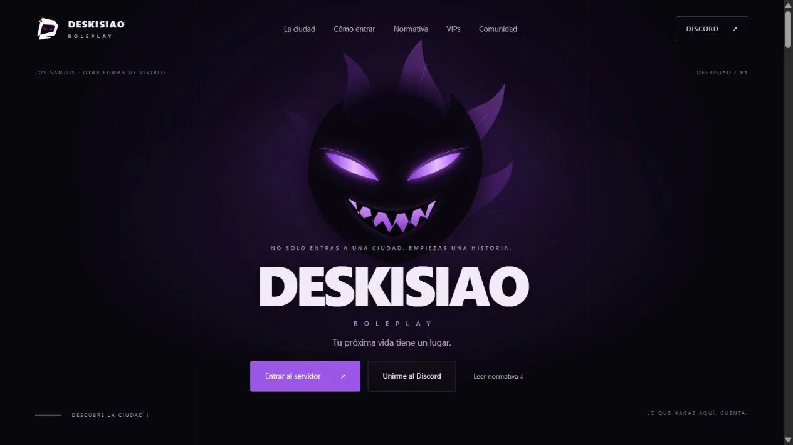

INTERFAZ REAL · DATOS FICTICIOSSoftware de escritorio
SEFEL
Recursos, costos y presupuestos en una aplicación de escritorio.
Dominio de negocio, precisión monetaria y conservación de documentos emitidos.
Leer el caso de estudioDESARROLLO DE SOFTWARE / CHILE
Aplicaciones web, escritorio y Android.
Integración de sistemas y desarrollo con Lua.

LA BASE
Ingeniería en Ciberseguridad en curso.
Último año de la salida intermedia de Analista Programador.
TRABAJO SELECCIONADO
Casos de estudio para recorrer el problema,
la implementación y la evidencia disponible.

INTERFAZ REAL · DATOS FICTICIOSRecursos, costos y presupuestos en una aplicación de escritorio.
Dominio de negocio, precisión monetaria y conservación de documentos emitidos.
Leer el caso de estudio
CAPTURA REAL DEL PROYECTOUn catálogo relacionado, desde el modelo de datos hasta una API de consulta.
Relaciones de datos, filtros combinables y un contrato público de solo lectura.
Leer el caso de estudio
CAPTURA REAL DEL PROYECTOUna identidad digital y una normativa que se puede explorar.
Navegación adaptable, identidad y búsqueda sobre una normativa estructurada.
Leer el caso de estudioProyectos independientes, con su propio alcance.
Desarrollo, integración y mantenimiento de un servidor FiveM.
Formularios, navegación y reglas de cobro con Kotlin.
Estado y persistencia local, con recuperación ante datos inválidos.
Exploración anatómica 3D y una edición estática para el navegador.
Un dispositivo físico y una arquitectura central para asistencia laboral.
Código, documentación y demos en los enlaces de cada proyecto.
SOBRE MÍ / PERFIL
Mi formación conecta programación y ciberseguridad. Me interesa desarrollar aplicaciones y comprender cómo se relacionan la interfaz, las reglas y los datos.
Mis proyectos reúnen ejercicios académicos, prototipos y un entorno personal de FiveM. En ellos trabajo con formularios, persistencia, APIs, reglas de cálculo, eventos y recursos conectados.
Busco mi primera oportunidad como Analista Programador o desarrollador junior, con interés en trabajo remoto desde Chile. Presento el alcance de cada entrega y el apoyo de IA cuando corresponde, para que el código y las decisiones puedan revisarse con contexto.
Consultar perfil y currículumLógica de negocio, validación, cálculos y persistencia en proyectos de escritorio y móvil.
Interfaces React, sitios estáticos y aplicaciones Django con endpoints de consulta.
Recursos FiveM, scripts Lua, dependencias, respaldos y despliegues acotados documentados.
TECNOLOGÍAS Y HERRAMIENTAS
Uso demostrado en los proyectos.
Sin porcentajes ni niveles arbitrarios.
Componentes, estado y persistencia local en React; navegación y búsqueda en sitios estáticos.
Modelos relacionados, consultas, formularios, API de lectura y pruebas de comportamiento.
Interfaz de SEFEL, documentos y cálculos monetarios en su dominio de negocio.
Navegación entre actividades, formularios, recursos y reglas de cálculo en un certamen.
Eventos, callbacks, validaciones del servidor y compatibilidad entre recursos de terceros.
Control de versiones, pruebas de regresión, verificaciones y publicación de demos.
Three.js y FastAPI aparecen en el atlas realizado con apoyo de IA. Flutter, Node.js y PostgreSQL forman parte del stack propuesto de SmartAttendance 360; su integración sigue en desarrollo.
FORMACIÓN Y TRAYECTORIA
La trayectoria se presenta desde la formación y los proyectos disponibles, sin atribuir experiencia laboral.
Último año correspondiente a la salida intermedia de Analista Programador. La fecha de titulación aún no está confirmada.
SEFEL, Mis Reinas, el certamen Android y ejercicios React como espacios para conectar requisitos, interfaces y datos.
Trabajo con Lua y mantenimiento del servidor Deskisiao; una web pública separada presenta la comunidad.
Participación compartida en un sistema que propone conectar hardware, backend, web y móvil.
METODOLOGÍA DE TRABAJO
Prácticas reflejadas en las mejoras
documentadas de los proyectos.
Identificar el problema y distinguir requisitos implementados, demostraciones y funciones pendientes.
Organizar interfaz, reglas y datos para revisar cada parte sin mezclar sus contratos.
Probar validaciones, datos inválidos, errores de almacenamiento y respuestas del sistema.
Conservar instalación, pruebas, decisiones y pendientes para reproducir y explicar el resultado.
PRÓXIMO PASO
Interés en desarrollo de software junior y trabajo remoto desde Chile. El currículum reúne mi formación y los proyectos que puedes explorar aquí.
Correo profesional y LinkedIn pendientes de definir. Por ahora se publican el perfil y el código disponibles.